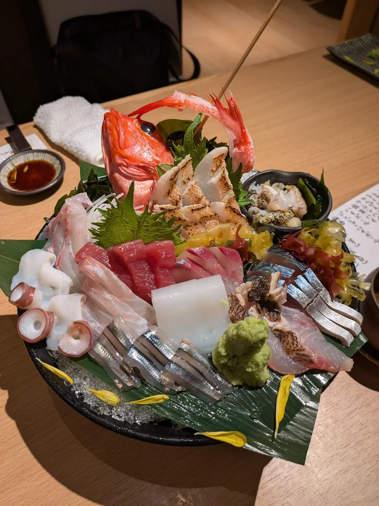
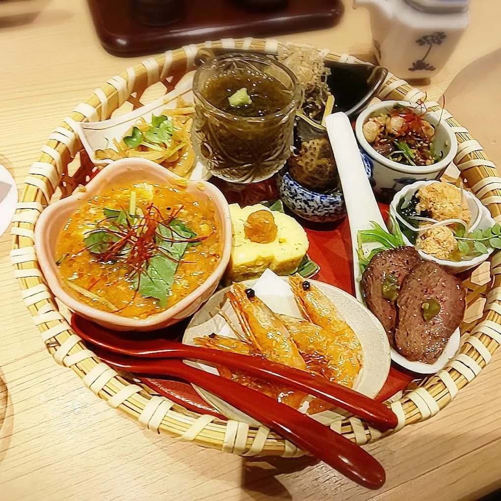
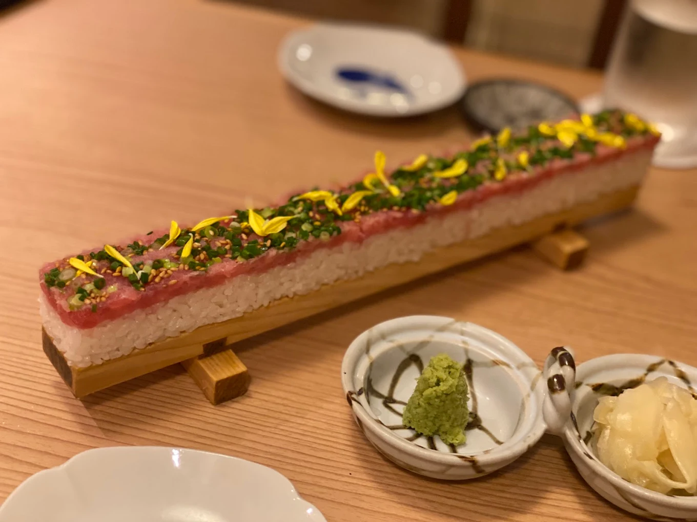

「旬魚とおばんざい 彩り」（要予約）
名古屋市北区山田
※JR・瀬戸線・名城線-大曽根駅から徒歩6分



Googleマップの評価「星４.８」
板前で修業した大将の作る旬の鮮魚とおばんざいの居酒屋。
店内の雰囲気は和風でかなり清潔であり、大切な人や上司などと来ると喜ばれること間違いなし。
大将が朝一に市場まで足を運び、厳選した新鮮な旬の魚は驚くほど美味い。「おばんざい」とは京都で生まれた旬の野菜や乾物などを使った料理のことだが、この店では既に作り置きしてあるおばんざいの料理が大皿に盛って置かれている。捌く前の鮮魚はカウンター前に氷と共に並べられていて、前述のおばんざいと合わせて見ていると料理への期待感が高まるだろう。
お酒に関しては、メニューに記載のある酒のレベルは結構良いなものなのだが、実は大将の隠し酒があり運が良ければ珍しい日本酒や焼酎にありつける。
「店舗所在地」
| 住所 | 〒462-0810 愛知県名古屋市北区山田１丁目９−５ ミヤマビル 1F A店舗 |
|---|---|
| TEL | 052-508-7758 |
| URL | https://mr-irodori.owst.jp/ |